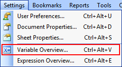

Easy Date Range Selection with Qlikview
By default, Qlikview allows you to use a date picker or slider object to select dates you can use as ranges to apply to a database field. There are a few problems with this approach:
- Slider objects don't allow you to easily select specific dates when you have lots of possible dates.
- Calendar objects don't allow for easy range selection across multiple months.
- Using list selection boxes can flood the screen with lists of months and years.
- By default, these date ranges will not affect charts based on different date fields.
Fortunately, it's easy to set up Qlikview with a more standard "select two dates" widget that will affect all of your charts, regardless of what database date fields drive their display ranges.

The process consists of three steps:
- Define variables to hold your start and end dates.
- Create calendar widgets that set the values for these variables.
- Make your charts filter their different database date fields based on the values of these variables.
How do I set up variables in Qlikview?
In the 'Settings' menu, there's an item labeled 'Variable Overview...' which will allow you to define variables.
After clicking on the menu item, use the 'Add' button to define your variables. For this example, I'll use vStartDate and vEndDate.
How do I make my date selectors use variables?
On the 'General' tab of the 'Slider/Calendar Object', you'll see that the 'Data' option is set to 'Field' by default, this causing the object to affect the range of values for the chosen database field. Change this option to 'Variable(s)', then enter the name of one of the two date fields.
To limit the ranges a user can select, you can define a minimum and maximum value.
The cleanest way to do this is base the minimum and maximum of your start date selector on the minimum and maximum values that your database table holds with the Min and Max functions:
=Max(database_field_date)
For the end date selector, base the minimum value on the current value for the start date variable:
=$(vStartDate)
How do I make my date selectors affect multiple charts?
For each chart, go to the 'Expressions' tab in the properties, then click on the 'Definition' field and enter an expression to filter based on the variables your date selectors are now affecting:
=Sum( if( database_field_date >= $(vStartDate) AND database_field_date <= $(vEndDate), ga_visitors) )
The above statement will only select records where the database_field_date is between the two dates picked with the calendar selectors. For only those records, it will sum up the values in the ga_visitors field.
Of course, you can use any other aggregate function you choose. You can, for example, count distinct instances of users based on date ranges as well:
=Count( DISTINCT if( database_field2_date >= $(vStartDate) AND database_field2_date <= $(vEndDate), visitor_id) )
So long as the result of this expression is a number, your charts will be able to use it to display the appropriate data.
Once you've updated your charts, you are done! Simply adjust the dates using your selectors and watch as the charts update in real-time.